Private Cloud
Big Picture
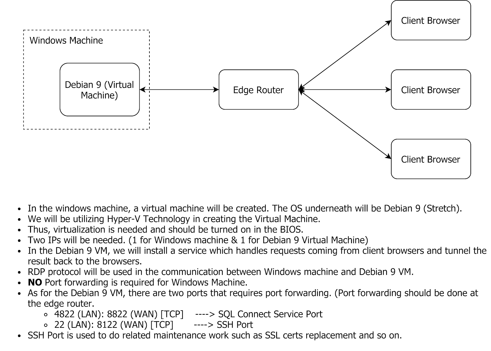
Quick Checklist
- Make sure the client has fiber internet (MAXIS, UNIFI, TIME). (STRICTLY NO STREAMYX/BROADBAND/UNIFI LITE)
- Will need 2 IP Address. (1 for Windows & 1 for Debian 9 Virtual Machine)
- If no special requirements, may leave it empty in the checklist. We will assign them accordingly.
- Port forwarding will be done on the Debian 9 VM.
- If not sure how to configure this, may leave it empty in the checklist. We will help in configuring it.
-
Enable virtualization in the BIOS. Here's how you can check if you have enabled it.
-
If it is not enabled, you may need to enter BIOS to switch it on. Here's how you can enter your server's BIOS.
-
Enable Hyper-V after the above has been done.
-
Get Dynamic DNS (DDNS)/ Fixed WAN IP ready.
-
If you are getting one from NO-IP, you may set it up using the client provided. Here's how.
-
Make sure the server has Ethernet connection. (STRICTLY NO WIFI IS ALLOWED)
-
Download and install Firebird Server.
-
Make sure there is no antivirus other than Windows Defender.
-
Fill in the checklist and send it to us.
{kind=link}
Prerequisites (Detailed Information)
Network
- Make sure to have fiber network (not streamyx, broadband & unifi lite) / low latency internet access. (ping below 20ms)
- Reserve 2 IP Address: 1 for Windows & 1 for Debian virtual machine.
- Must have wired network connection/Ethernet.
- Will do port forwarding pointing towards the Debian machine as below:
8822[WAN] : 4822[LAN] 8122[WAN] : 22[LAN] Both entries are in TCP mode. NO PORT FORWARDING ON THE WINDOWS. - Have a ready dynamic DNS (DDNS) / Fixed WAN IP Address.
Hardware
- CPU model not older than Intel i5 (5th generation) or AMD Ryzen 5.
- RAM should be at least 8GB.
- Make sure CPU Virtualization is enabled in the BIOS.
- We encourage users to switch on the PC for 24/7 so that maintenance work can be carried out without interferring users' work during work time.
- Must have Solid State Drive (SSD).
Operating System
-
Windows Defender did it's job pretty well in protecting/securing your server. No third party antivirus should be installed in the server.
Explanation:
Third party antivirus including avast, avira, kaspersky and so on have different behavior. Each of them acts differently towards SQL Connect setup.Besides, if these antivirus update and breaks SQL Connect dependencies, it will take a long time for us to debug and resolve before your service back online. The windows antivirus (Windows Defender) has became very mature and is sufficient in securing your server. -
If you have used/installed serverlink in the server before, kindly reformat your server.
- During the setup, automatic Windows Update will be disabled. However, users still able to update by clicking on the update in the settings.
- SQL Connect only support Windows 10 Professional (version 1709, 1803, 1809) or Windows Server 2016 (Essential Edition and above).
- The version mentioned above supports unlimited concurrent users.
- Others will have a limit of 15 concurrent users login at once.
-
Enable Hyper-V Virtualization.
SQL Connect Detector
- SQL Connect Detector is an application for verifying/troubleshooting private cloud.
- If you want to check if your server is eligible for setup, you may click on Examination.
- If you have a ready private cloud server, and have issue connecting to your server, you may click on Troubleshooting to run analysis on your system.
-
You can download it from SQL Connect Detector (SQL Drive)
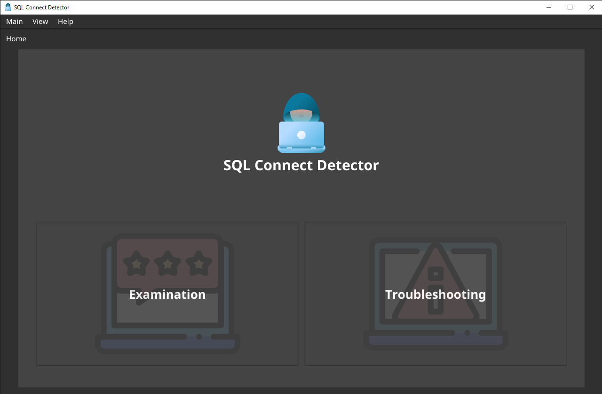
Examination
-
You may enter your dynamic DNS (DDNS) / fix Public IP Address here.
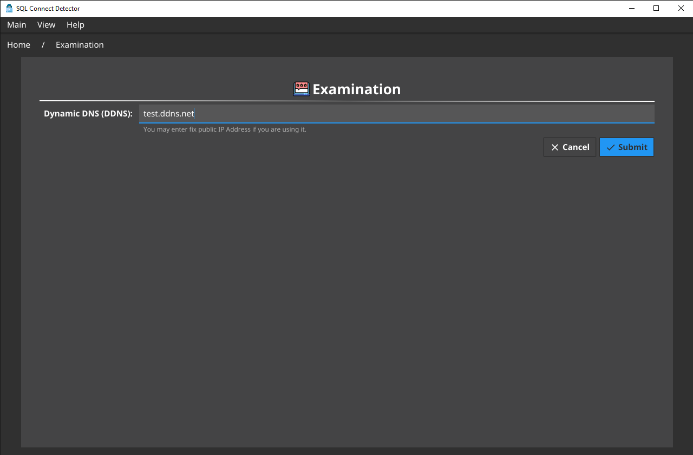
-
In the next windows, a report will show you if your server is eligible for the setup.
- Your server is ready to setup if the report has every fields in
green . -
Suggestions will be given based on the report result.
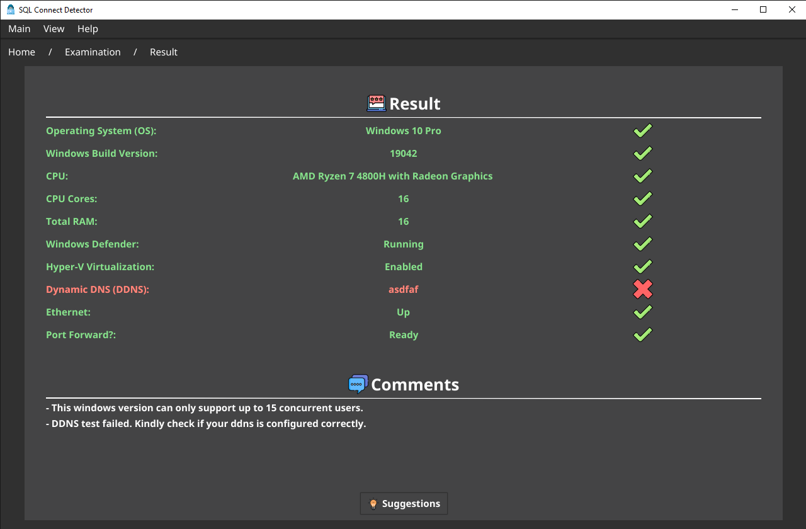
Troubleshooting
- You may enter your dynamic DNS (DDNS) / fix Public IP Address here.
-
You may also change the port forwarded if you are not using the default.
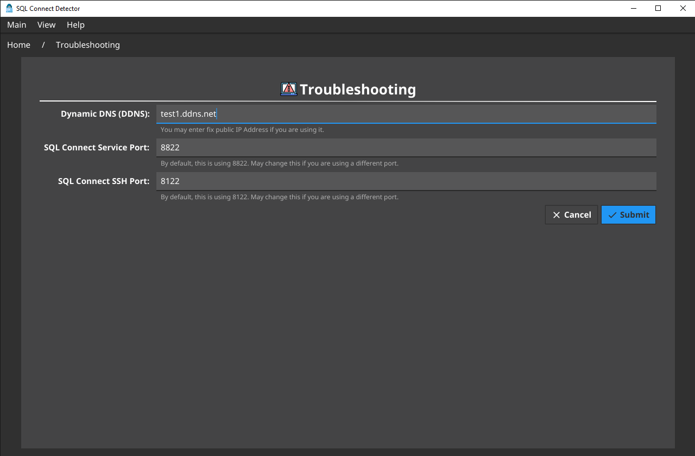
-
In the next windows, a report will show you what issue your server is facing.
- Your server's state is healthy if the report has no field marked in
red . -
Suggestions / solutions will be given based on the report.
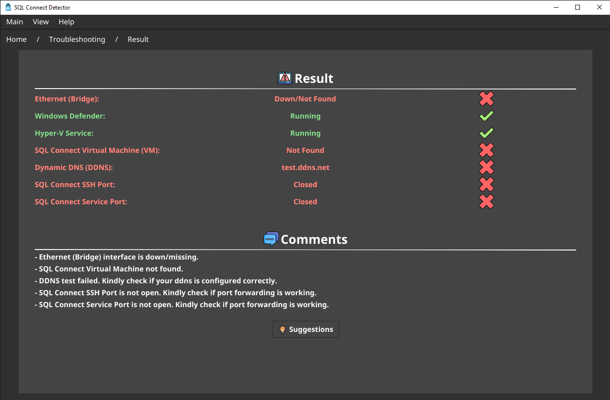
Dynamic DNS (DDNS)
- If you don't have a DDNS, you may get one free from DuckDNS.
-
Firstly, visit Duck DNS.
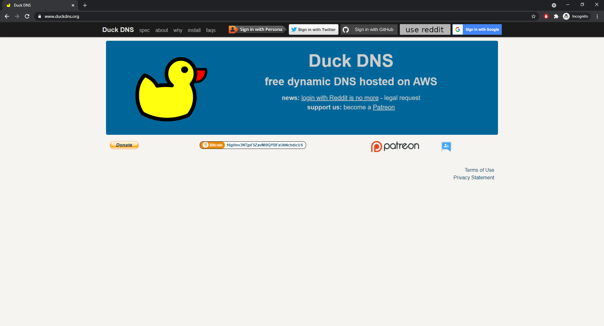
-
Next, sign in using your gmail.
-
Once you have sign in, you will reach the following page.
-
Create a DDNS that you like.
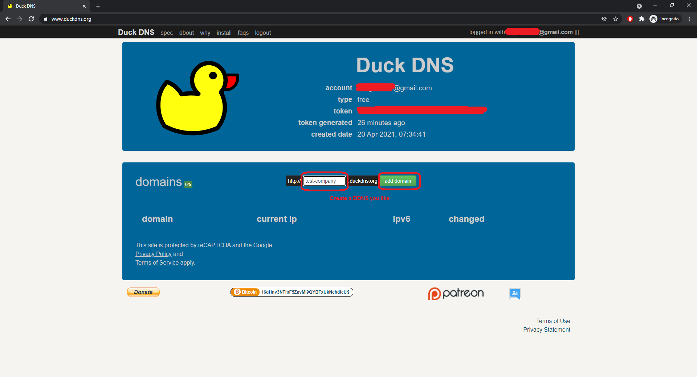
-
You will end up with a screen similar to the one below. Next, click on install.
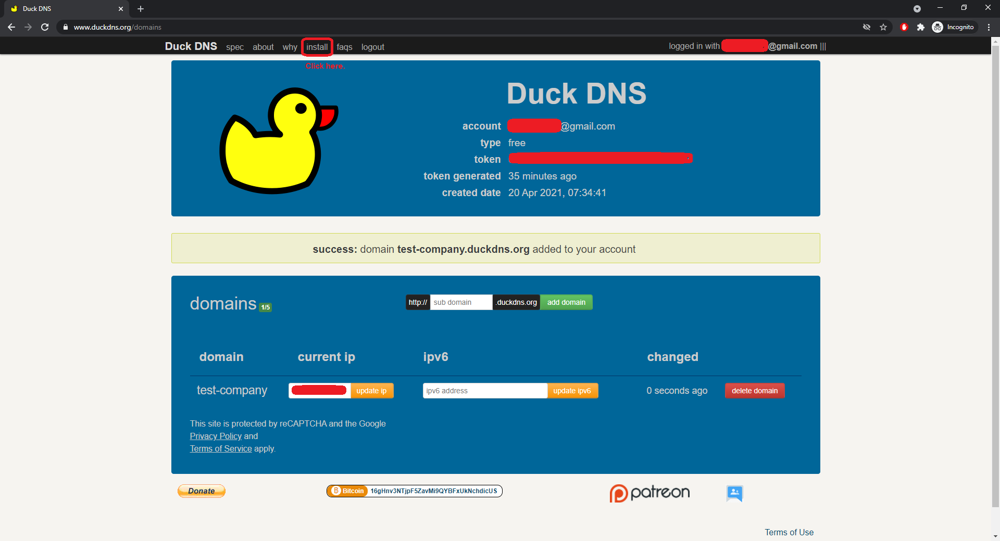
-
Select
windows-gui, and choose the DDNS you created just now.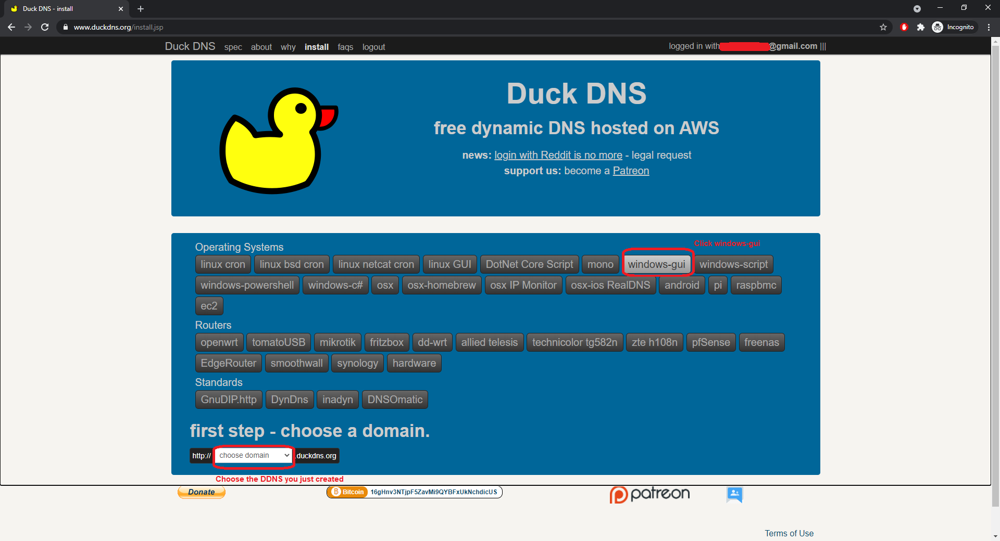
-
A guide will be shown similar to the screen below. Follow the steps.
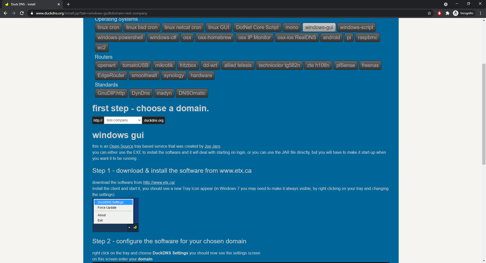
-
Lastly, write the ddns you just created in the checklist prepared. (Ex.
test-company.duckdns.org)
Troubleshooting
Bridge Network Failure
- Visit
Control Panel > Network and Internet > Network and Sharing Center -
Click
Change Adapter Options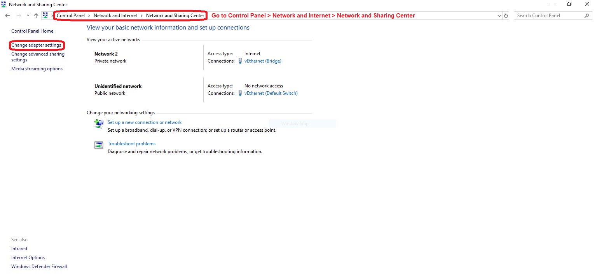
-
Look for adapters named
EthernetandEthernet (Bridge)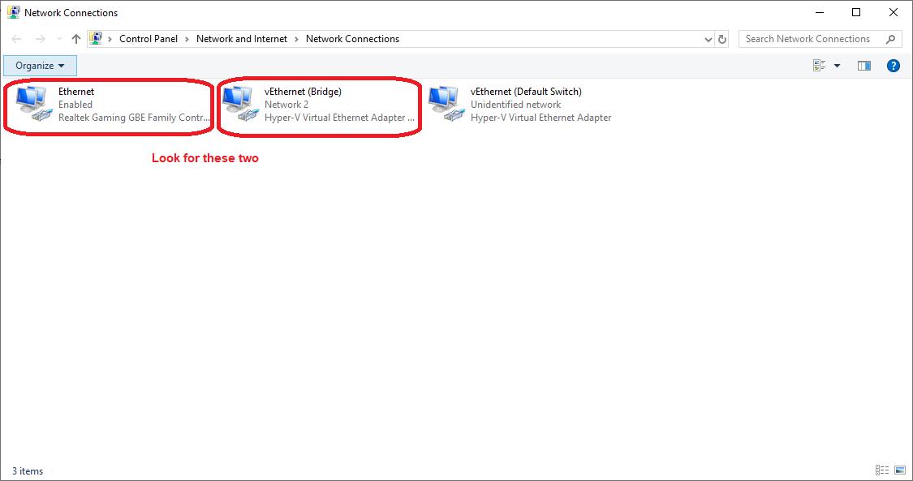
-
Right click and check the properties of each adapter.
-
For
Ethernet, it should have the following check (Example shown below):- Microsoft LLDP Protocol Driver
- Hyper-V Extensible Virtual Switch
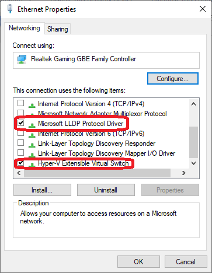
-
For
Ethernet (Bridge), it should be the following uncheck (Example shown below):- Microsoft Network Adapter Multiplexor Protocol
- Hyper-V Extensible Virtual Switch
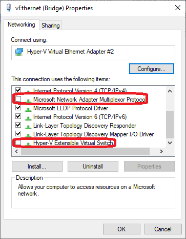
Hyper-V Service Not Running
- Open
Services(searchservicesin Windows search) - Look for a service called
Hyper-V Host Compute Service -
If the service status is not Running, right click and start it.
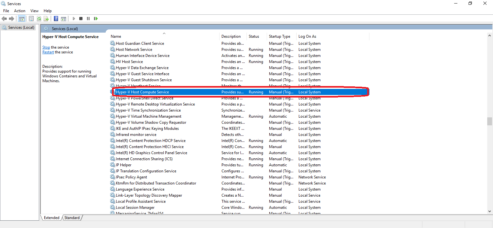
SQL Connect Virtual Machine Not Running
-
Open
Hyper-V Manager(searchhyper-vin Windows search)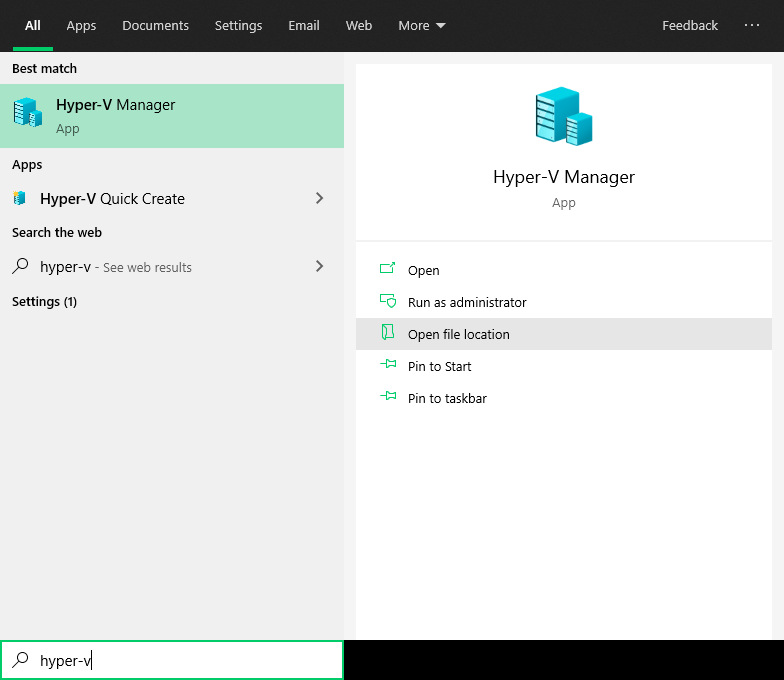
-
Look for a virtual machine with the name SQL Connect.
- Make sure it's running.
-
If it's state is some state other than running, right click on the virtual machine, and click Start.
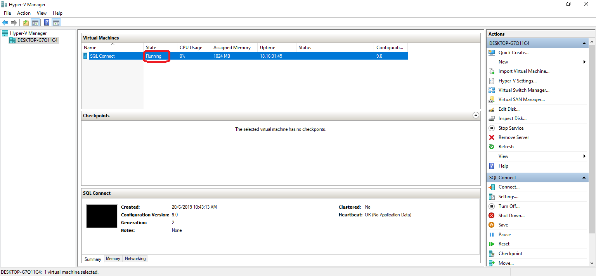
Windows Defender Not Running
- If the service is not running, you have probably install third party antivirus in your server.
- Antivirus like Kaspersky, Avira, Avast and so on are considered as third party antivirus.
- These antivirus acts differently in different operation and the outcome is unpredictable.
- What you can do is, uninstall it and restart your server. If the issue persist after uninstall, kindly contact our dealer / support.